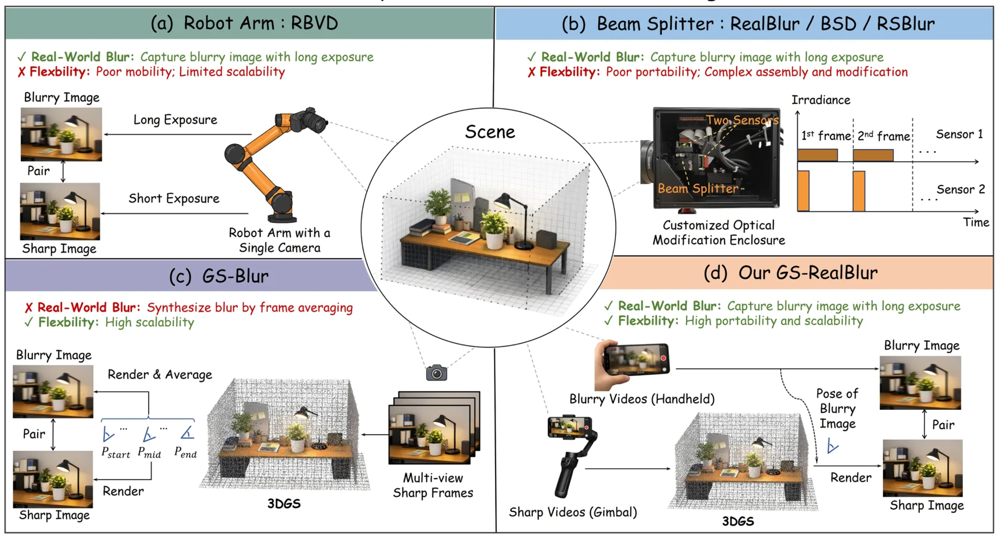
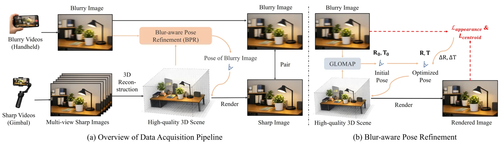
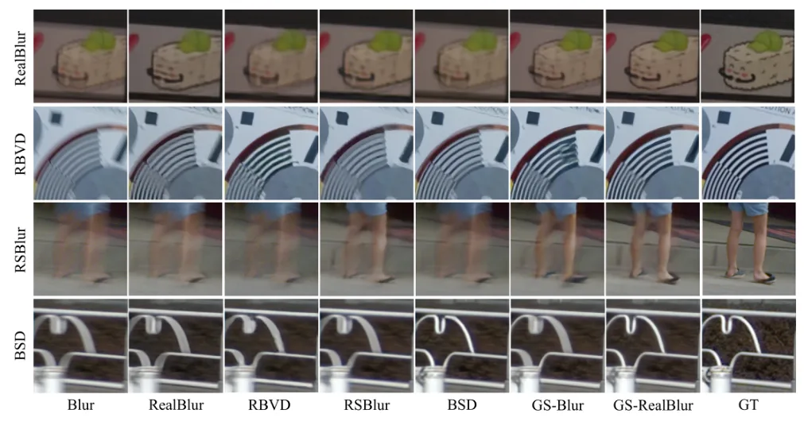
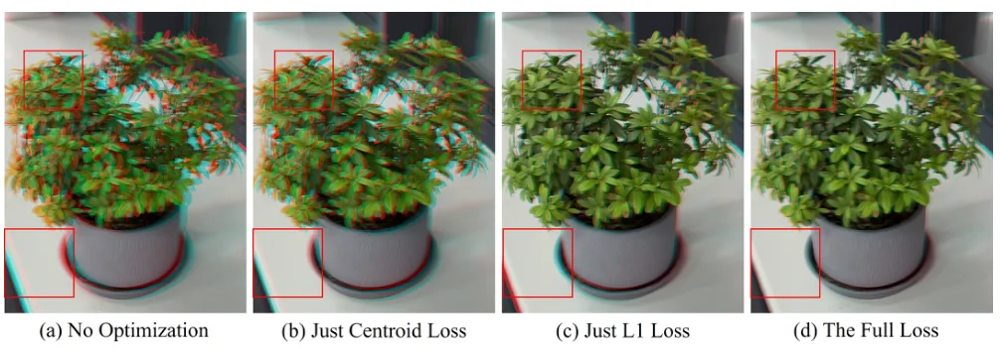
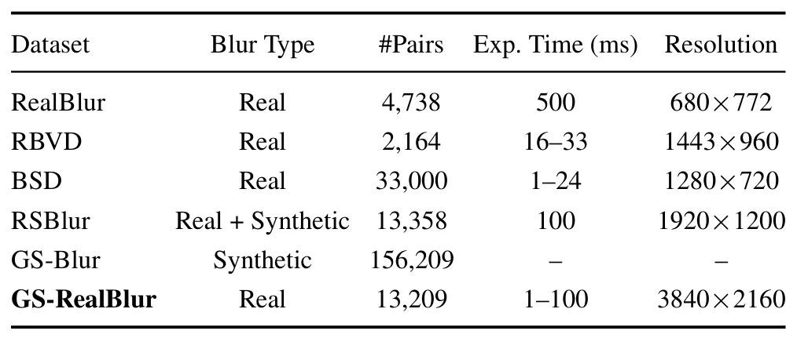
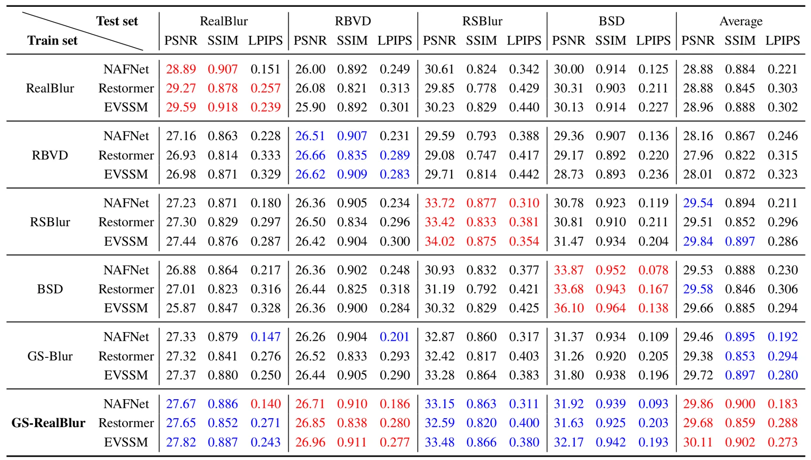
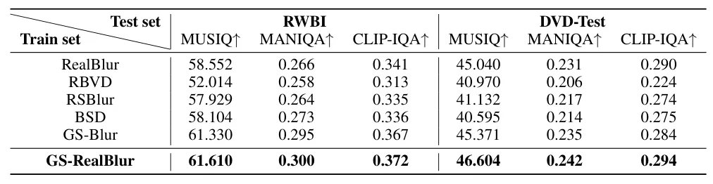
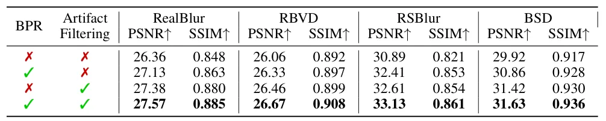
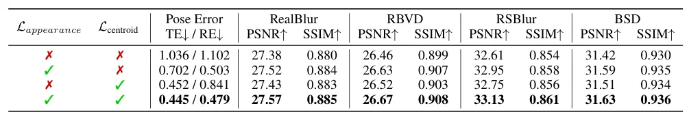
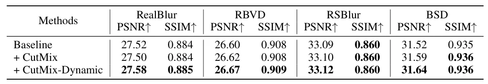

GS-RealBlur：灵活的真实图像去模糊数据采集框架GS-RealBlur: A Flexible Data Acquisition Framework for Real-World Image Deblurring
把三维重建和位姿优化用于解决真实配对数据采集，几何链条清晰且对模糊条件定位有反向意义；代码和数据尚仅承诺公开。
一句话工作总结
先重建清晰场景，再按模糊帧位姿渲染清晰对应图，用三维几何替代刚性双相机配对采集。
摘要
高质量大规模配对数据对学习式去模糊至关重要，但合成模糊缺乏真实感，真实采集又常依赖复杂相机系统。GS-RealBlur 使用手持相机拍摄模糊图像，并用云台密集采集同一场景的清晰图像；随后重建清晰图像的三维表示、标定每个模糊帧位姿，并从该位姿渲染清晰配对图。Blur-aware Pose Refinement 通过外观一致性和质心对齐进一步校正位姿。由此构建的数据集训练出的模型在多个真实去模糊 benchmark 上表现出更好泛化。
High-quality, large-scale paired data is essential for training learning-based image deblurring models. However, synthetic blurry images generally lack realism, while real-world captured images require complex and inflexible camera systems. In this work, we propose GS-RealBlur, a data acquisition framework for real-world image deblurring, achieving both blur realism and acquisition flexibility. Specifically, we use a handheld camera to capture blurry images, and deploy a gimbal to densely capture sharp images of the same scene. We reconstruct the 3D representation of sharp images and calibrate the camera pose of each blurry frame within this 3D. The image rendered from this 3D according to the pose serves as the sharp counterpart. To better align the rendered image with the blurry image, we introduce a Blur-aware Pose Refinement (BPR) module that refines the pose using appearance consistency and centroid alignment constraints. Leveraging GS-RealBlur, we construct a high-quality and diverse dataset. Extensive experiments demonstrate that a deblurring model trained on our dataset achieves superior generalization performance across various real-world deblurring benchmarks, consistently outperforming models trained on existing synthetic and real-world datasets. The code and dataset will be made publicly available.
中文解读摘录
- 链接：arXiv 2607.15401
- 核心贡献：手持相机采模糊帧、云台密集采清晰帧，先重建场景并标定模糊帧位姿，再从三维表示渲染清晰配对图；Blur-aware Pose Refinement 通过外观一致性和质心约束改善对齐。
- 为什么重要：三维重建被用作真实数据采集基础设施，位姿精度直接决定配对监督质量；对运动模糊条件下的定位与重建也有反向启发。
- 待核查：采用的三维表示、动态物体与曝光差异、残余配准偏差，以及数据和代码实际公开时间。
图表/页面预览
{kind=link}

{kind=link}

{kind=link}

{kind=link}

{kind=link}

{kind=link}

{kind=link}

{kind=link}

{kind=link}

{kind=link}
